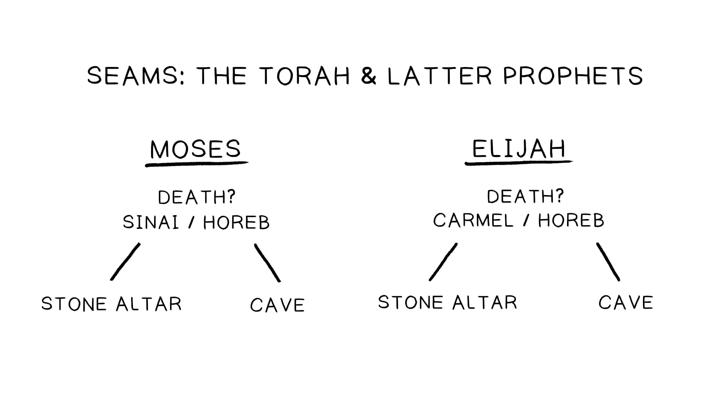

Costura UmSeam One
As frases finais da Torá e as frases de abertura dos Profetas:The final sentences of the Torah and opening sentences of the Prophets:
Deuteronômio 34:10-12:Deuteronomy 34:10-12: Antecipação de um profeta vindouro semelhante a Moisés, que foi prometido, mas nunca veio.Anticipation of a coming Moses-like prophet who was promised but never came.
Josué 1:1-9:Joshua 1:1-9: O líder designado por Deus, Josué, que guiará o povo para a terra prometida, deve meditar na Torá dia e noite para encontrar sucesso.God’s appointed leader Joshua, who will lead the people into the promised land, must meditate on the Torah day and night to find success.
Costura DoisSeam Two
As frases finais dos Profetas e as frases de abertura do Ketuvim:The final sentences of the Prophets and the opening sentences of the Ketuvim:
Malaquias 4:4-6:Malachi 4:4-6: Antecipação de um profeta vindouro semelhante a Elias, que chamará o povo de volta à Torá e restaurará os corações de Israel antes do Dia do Senhor.Anticipation of a coming Elijah-like prophet who will call the people back to the Torah and restore the hearts of Israel before the Day of the Lord.
Salmo 1-2:Psalm 1-2: O justo que será vindicado no julgamento final é aquele que medita na Torá dia e noite para encontrar sucesso (Sl. 1). Esse justo é o futuro rei messiânico da linhagem de Davi, que é designado por Deus para governar as nações e vencer o mal de uma vez por todas (Sl. 2).The righteous one who will be vindicated in the final judgment is one who meditates on the Torah day and night to find success (Ps. 1). This righteous one is the future messianic king from the line of David, who is appointed by God to rule the nations and overcome evil once and for all (Ps. 2).

As costuras do TaNaK ajudam a iluminar o que os autores e compiladores da Bíblia Hebraica pretenderam como propósito desta coleção de escritos.The seams of the TaNaK help illuminate what the authors and compilers of the Hebrew Bible intended as the purpose of this collection of writings.
A Bíblia Hebraica é literatura de meditação projetada para promover:The Hebrew Bible is meditation literature that is designed to foster:
As costuras do TaNaK descrevem o tipo de líder que a humanidade realmente precisa. O que a Torá e os Profetas dizem que essa pessoa é como?The seams of the TaNaK describe the kind of leader humanity really needs. What do the Torah and Prophets say this person is like?